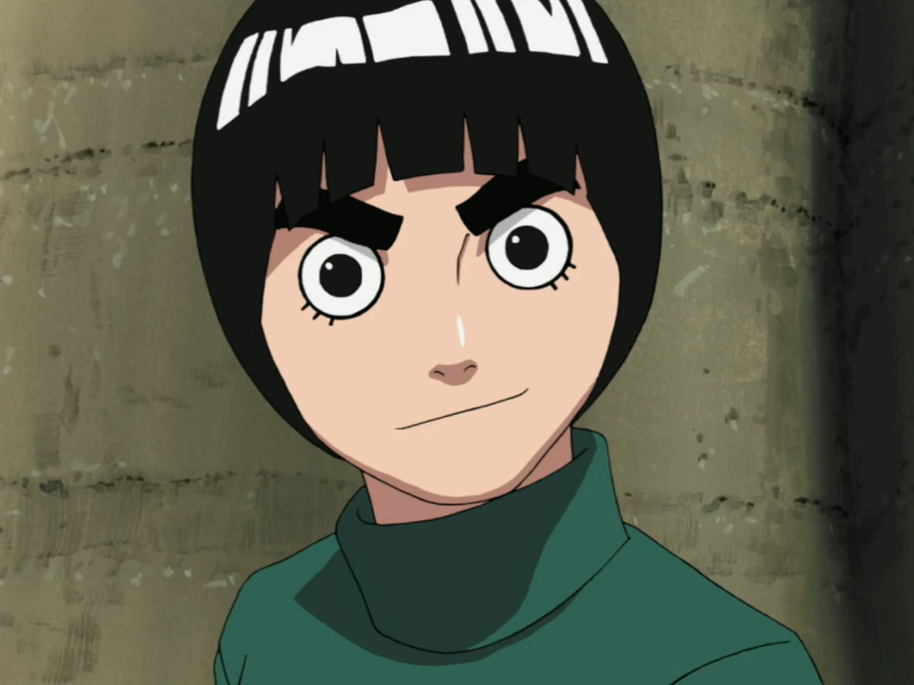
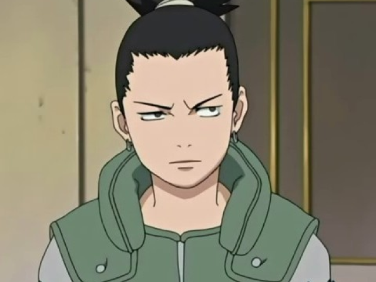
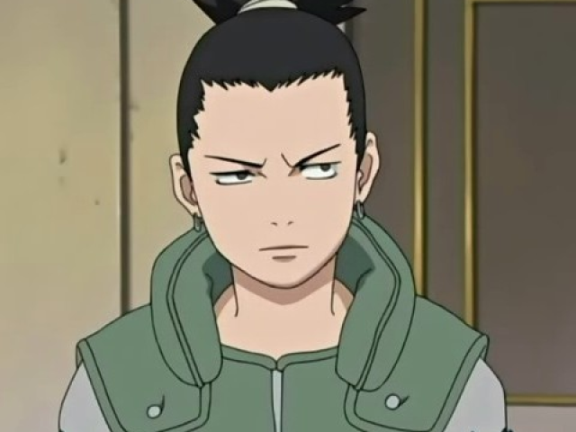
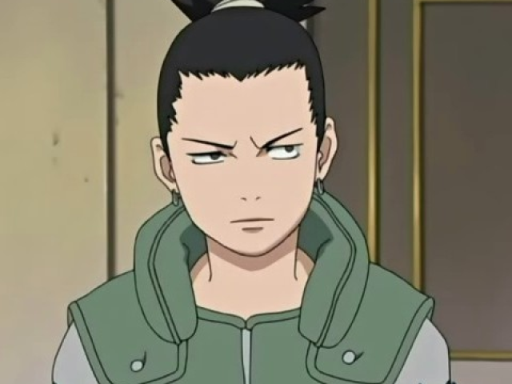
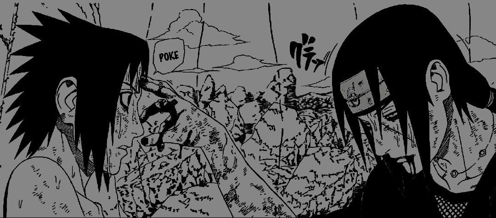

-
ESSE É O MEU JEITO
NINJA DE SER

UMA CRIANÇA QUE LIDOU COM A REJEIÇÃO E AS ADVERSIDADES DESDE CEDO, DENTRO DA SUA VILA. SEMPRE SOZINHO, VISTO COMO UM MONSTRO. PARA SER NOTADO, SEMPRE APRONTAVA COM MUITAS BAGUNÇAS POREN POR DENTRO SENTIA-SE NAQUELA SOLIDÃO PROFUNDO, MAS TUDO MUDOU AO ENTRAR NA ESCOLA NINJA. O TIME 7... E O RESTO??? O RESTO É HISTÓRIA !!!
Sobre Naruto
Seus amigos

 


